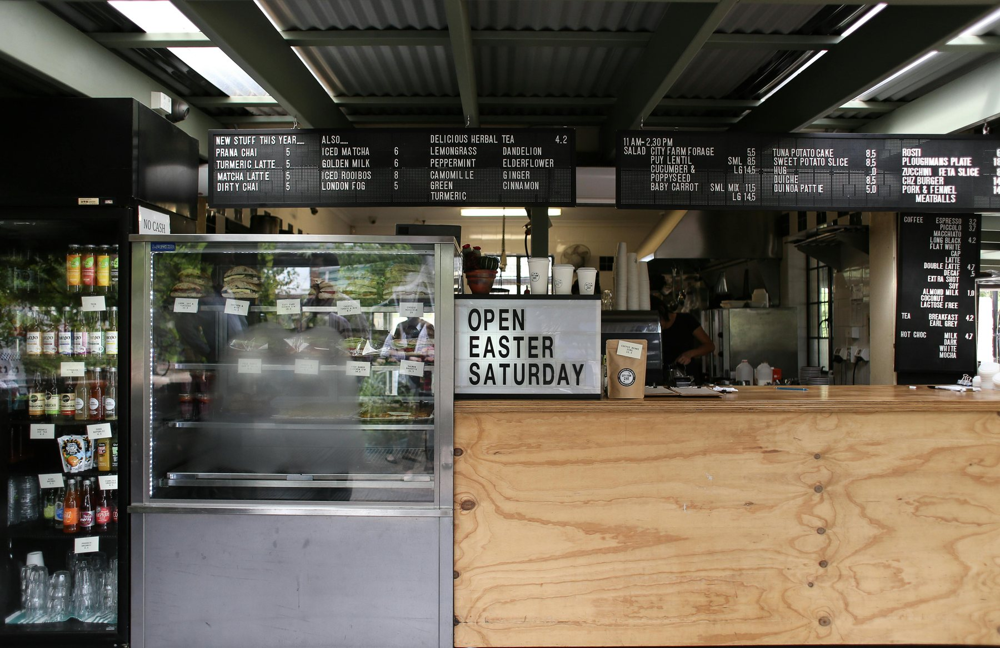
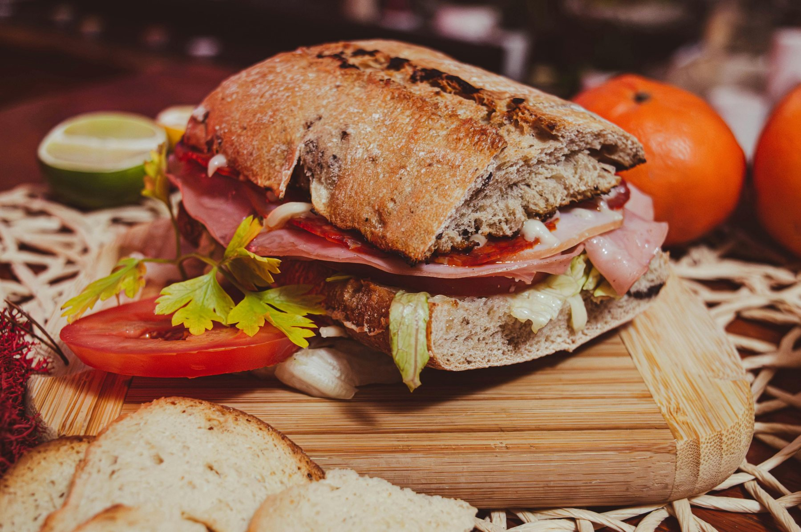

Fresh first
Food leads the brand
Photography and layout are built around the product, not decorative filler.
A simple brand story for a sandwich shop that wants to feel warm, useful, and easy to trust.

Brick & Board is built around a simple promise: good bread, satisfying sandwiches, and a lunch break that feels a little easier. The shop tone stays warm, but never fussy.

These are the small cues that make the concept feel grounded instead of generic.
Photography and layout are built around the product, not decorative filler.
Order, menu, and catering paths stay visible without making the page feel busy.
The tone feels elevated without sounding like a fine-dining restaurant.
The pages stay direct so people can get what they need without hunting around.
Hero visuals and best sellers make the shop feel real before the user reads much text.
Visitors can go to menu, order, or catering without guessing where to click next.
Hours, address, contact info, and social links stay near the footer on every page.
Hours, address, and contact details stay easy to spot on every page.
Real photos and softer contrast help the concept feel closer to a finished neighbourhood sandwich shop.
